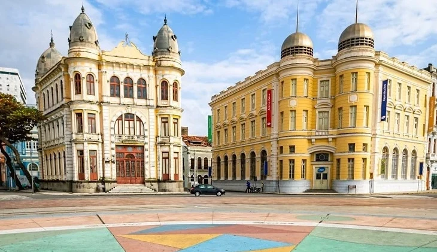
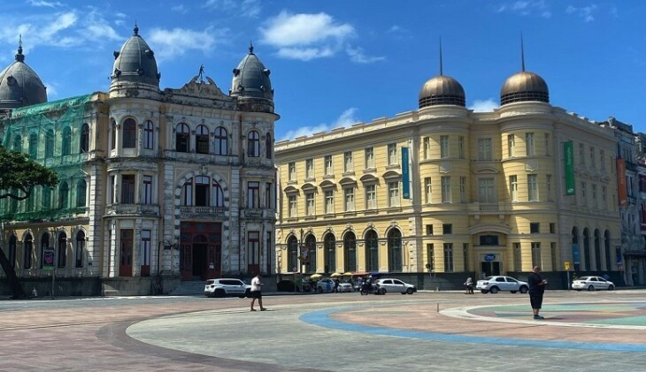

Sobre:
Praça do Marco Zero é o ponto de partida oficial de todas as estradas do estado de Pernambuco, localizado no coração do Recife Antigo, próximo ao Porto do Recife. Conhecida também como Praça Barão do Rio Branco, a praça abriga um marco vermelho que marca o quilômetro zero do estado, além de uma rosa dos ventos criada pelo artista Cícero Dias e uma estátua em bronze do Barão do Rio Branco, escultura do francês Felix Charpentier.
O que esperar da vista:
A praça é um ponto de encontro histórico e cultural, ideal para começar a explorar a cidade. Apesar de alguns visitantes apontarem falta de estrutura, como guias e comércio mais organizado, muitos destacam a vibe animada, a beleza da arquitetura antiga e a proximidade com atrativos como o Paço do Frevo, a Caixa Cultural e o Parque das Esculturas — com destaque para a Coluna de Cristal, obra de Francisco Brennand. Durante o Carnaval, a praça se transforma no quartel-general do Carnaval Multicultural de Recife, com muitas atrações ao ar livre.
Avaliações dos visitantes:
- Pontos positivos: Local vibrante, belas esculturas, vista para o porto, fácil acesso, ótimo para fotos e passeios noturnos. Muitos consideram a praça um dos principais cartões-postais da cidade.
- Pontos de melhoria: Alguns relatos apontam sujeira, prédios em estado de conservação precária e falta de revitalização no entorno. A área é bem movimentada, mas pode ser abarrotada de fotógrafos e ambulantes.